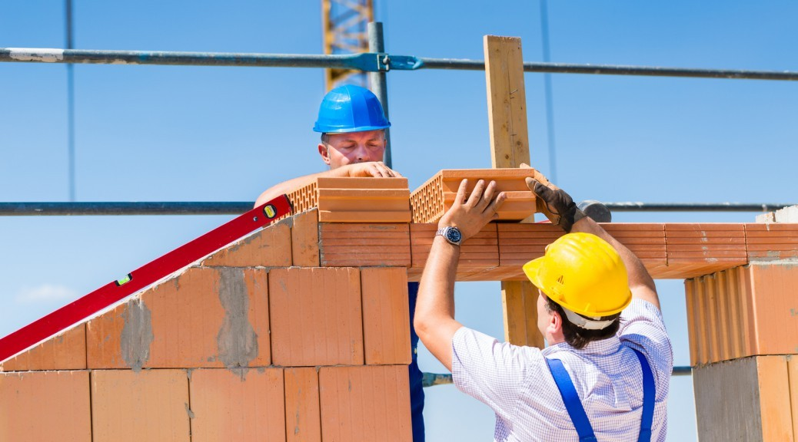

Самый оптимальный вариант — начинать стройку в конце весны, когда земля уже оттаяла, а впереди еще есть лето и осень. Однако летом высокий спрос на материалы и хорошие бригады строителей, поэтому лучше закупиться и договориться с рабочими заранее.
Типы строительства домов
Одним из важных критериев при строительстве домов является выбор его типа. Сначала необходимо определиться с видом материала, из которого будет возводиться сооружение. В современном мире выбор типов строительного материала для стен довольно велик. Дом может быть:
В зависимости от того, какой вид материала будет использоваться для возведения стен, подбирается подходящий тип фундамента, что является самой важной деталью при возведении любой постройки. Именно от правильно подобранного, а также правильно и качественно возведенного фундамента будет зависеть прочность и долговечность всей конструкции.
В строительстве выделяют четыре главных вида: